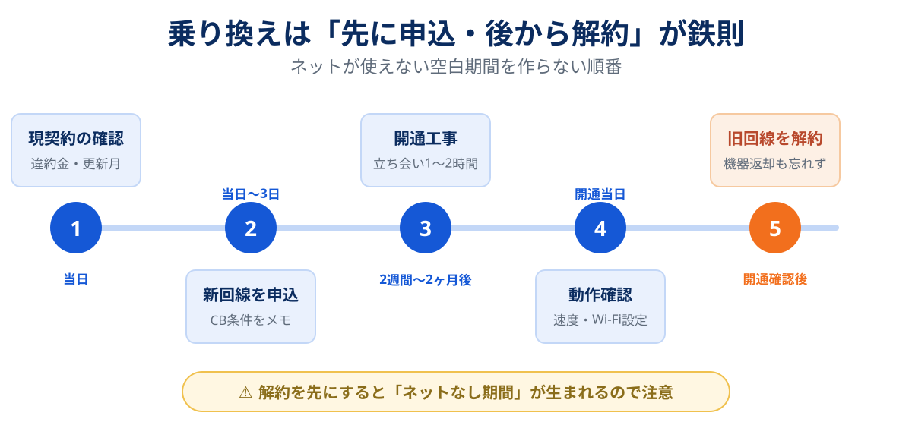

光回線の乗り換えは、正しくやれば数万円単位のキャッシュバック+月額の削減が手に入る、家計の見直しの中でもかなり割のいい作業です。ただし「正しくやれば」の条件付き。受け取り手続きを忘れたり、不要オプション込みで契約したりすると、うまみは簡単に消えます。
この記事では、乗り換えの全手順と「損する落とし穴」を、順番にすべて潰していきます。
損しない乗り換えの鉄則は3つ。①新回線の開通を確認してから旧回線を解約する ②キャッシュバックの受け取り条件を申込当日にカレンダー登録する ③違約金は乗り換え先の負担キャンペーンで相殺する。この3つさえ守れば、ほぼ失敗しません。
乗り換えで実際いくら得するのか
ざっくりした金額感を先に共有します。2026年8月時点の相場観です。
| お得の種類 | 金額の目安 | 備考 |
|---|---|---|
| キャッシュバック | 2万〜7万円前後 | 回線・窓口・時期で大きく変動。オプション条件の有無に注意 |
| 月額の削減 | 月500〜1,500円 | セット割の適用や安い回線への変更で。年間で6,000〜18,000円 |
| 違約金負担 | 実費相当(上限あり) | 他社の解約違約金を負担するキャンペーンを実施する回線がある |
| 工事費実質無料 | 1.6万〜4.4万円相当 | 「実質無料」は分割相当額の割引。途中解約で残債が残る点に注意 |
乗り換えは3種類ある(新規・転用・事業者変更)
自分がどのパターンかで、工事の有無も特典の対象も変わります。最初に確認しましょう。
| パターン | 該当する例 | 工事 | 特典 |
|---|---|---|---|
| 新規 | フレッツ系以外(auひかり・NURO光など)への乗り換え、初めての光回線 | 必要 | 最も手厚い |
| 転用 | フレッツ光 → 光コラボ(ドコモ光・ソフトバンク光など) | 原則不要 | 新規よりやや控えめ |
| 事業者変更 | 光コラボ → 別の光コラボ(例:ソフトバンク光→GMOとくとくBB光) | 原則不要 | 新規よりやや控えめ |
転用・事業者変更は工事なし・短期間で切り替えられるので、今フレッツ網系の回線(ほとんどの光コラボが該当)を使っているなら、乗り換えのハードルはかなり低いです。切り替えには現回線の事業者から「承諾番号」を発行してもらい、それを新回線の申し込み時に伝えるだけ。
損しない乗り換え5ステップ

-
現契約を棚卸しする(所要15分)
マイページか契約書で「違約金の額」「契約更新月」「工事費の残債」「レンタル機器の有無」の4つを確認。ここが後の判断材料になります。
-
乗り換え先を決めて申し込む
スマホのセット割とエリアから選びます(7社比較はこちら)。申し込んだら、その場でキャッシュバックの受け取り時期と手続き方法をカレンダーに登録。転用・事業者変更なら承諾番号を先に取得しておきます。
-
開通工事(立ち会い1〜2時間)
新規の場合のみ。日程は申込時に調整します。2〜4月は混むので早めに。転用・事業者変更は原則工事なしで、切替日に自動で移行します。
-
開通したら動作確認
Wi-Fiルーターを設定し、速度測定サイトで実測をチェック。この時点ではまだ旧回線を解約しないでください。
-
旧回線を解約し、機器を返却する
新回線が問題なく使えることを確認してから解約。レンタル機器(ONU・ルーター)の返却を忘れると機器代金を請求されるので、返却キットが届いたらすぐ送り返しましょう。
キャッシュバックの罠5つとチェックリスト
キャッシュバック絡みで損をするパターンは、ほぼこの5つに集約されます。
罠1:受け取り時期が遠く、手続きを忘れる
「開通11ヶ月後に届くメールから1ヶ月以内に申請」のような設計は、忘れることを織り込んでいます。対策:申込当日にカレンダー登録。メールは専用フォルダに自動振り分け。
罠2:高額の条件が「オプション加入」
映像サービスや電話パックへの加入が条件の「増額」は、月額に直すと数ヶ月で食い潰されることも。対策:オプションなしの素の金額で窓口を比較する。
罠3:「最大◯万円」の"最大"を見落とす
最大額は10ギガプラン+複数オプション+新規のフルコンボ条件だったりします。対策:自分の契約パターン(1ギガ・マンション等)での金額を必ず確認。
罠4:振込ではなくポイント・商品券
現金振込と等価ではありません。使い道が限られるポイントなら、実質価値は割り引いて考えましょう。
罠5:最低利用期間前の解約で返還請求
キャッシュバック受領後すぐ解約すると、返還を求められる規約の窓口があります。対策:最低利用期間を確認してから乗り換え計画を立てる。
- キャッシュバックの受け取り時期と手続き方法をメモしたか
- その金額はオプションなし・自分のプランでの金額か
- 受け取りは現金振込か、ポイントか
- 最低利用期間と違約金の条件を確認したか
- 工事費「実質無料」の分割回数(=残債リスク)を確認したか
違約金・工事費残債はこう相殺する
「違約金があるから乗り換えられない」は、2026年現在ほぼ思い込みです。
- 解約違約金は大幅に下がった:2022年7月の制度改正以降の契約では、違約金は月額料金1ヶ月分程度が上限の水準になっています。
- 違約金負担キャンペーンがある:ソフトバンク光やauひかりなど、他社の解約金・残債を一定額まで負担する回線があります。
- キャッシュバックで相殺できる:違約金5,000円に対してキャッシュバックが数万円なら、収支は明確にプラスです。
「工事費実質無料」は分割払いを毎月割引で相殺する方式のため、途中解約すると残りが一括請求されます。契約から2年以内の乗り換えは、残債額を必ず確認してから判断してください。
乗り換え先の決め方
決め方は通常の選び方と同じで、スマホのセット割が起点です。ここでは要点だけ。
- ドコモ → ドコモ光
- au・UQモバイル → auひかり(エリア外ならビッグローブ光)。窓口は代理店比較で選ぶと確実です
- ソフトバンク・ワイモバイル → ソフトバンク光(違約金負担が手厚い)/速度重視ならNURO光
- 格安SIM・縛りを避けたい → GMOとくとくBB光(違約金0円なので、次の乗り換えも身軽)
- セット割の対象外で、とにかく現金還元を取りたい → AsahiNet光などの高額キャッシュバック型の光コラボ
各社の料金・実測・メリットの詳細は、比較記事にまとめています。
7社の料金・実測速度・セット割を1つの表で比較できます。
光回線7社比較を見るスマホ別の最適解が3分でわかります キャッシュバック型の光コラボを見る(AsahiNet光)※ キャッシュバックの金額・受け取り条件・申請時期は時期によって変わります。上の「罠5つ」を確認してから申し込んでください。
よくある質問
違約金がかかっても乗り換えは得ですか?
ネットが使えない期間はできますか?
乗り換えの頻度はどれくらいが適切ですか?
マンションでも同じ手順ですか?
まとめ:順番と条件確認だけで、乗り換えは勝てる
- 鉄則は「先に申込・開通確認後に解約」
- キャッシュバック条件は申込当日にカレンダー登録
- 「最大◯万円」ではなく自分の条件での金額で窓口を比較
- 違約金は相殺できる。確認すべきは工事費残債だけ
乗り換え先に迷ったら7社比較へ。引越しと同時に乗り換える場合は引越しのネット回線ガイドの方が手順に沿っています。
- 総務省「電気通信事業法の一部を改正する法律(令和4年施行)」関連資料 — 違約金上限の制度
- 各社公式サイトのキャンペーン規約(2026年8月確認)